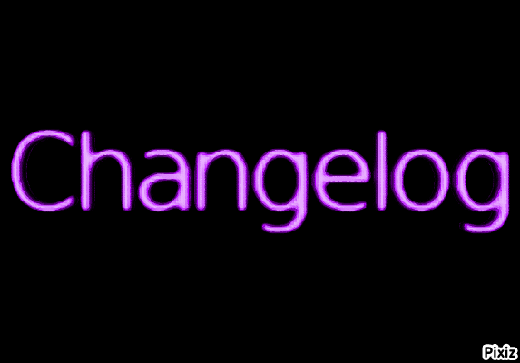

[Home]
Changelog: 21/08/2023: Added this changelog page just for my own sake but if people wanna see it then they can put the url manually. Started work on the about me but will not be shown on the website just yet.
thats all the changes for today. 22/08/2023: Added a guestbook very cool. added some funnys also doing more work on the about page will be done soon :) 24/08/2023: Renamed the why page to be a faq about the site and just me in genreal. 3/09/2023: made some changes to the about me and a new gif for the gif of the month 9/09/2023: added some more stuff on the about me I am really bored and yeah some more info but still not done 12/09/2023: added even more stuff to the about me page also looking into independent web hosting service but its expensive I need to do more research 21/09/2023: added erm yeah idk im really bored idk what to do with this website im being held back by github pages but oh well 6/10/2023: well its been a while yes this website is still running off github pages but also I have been quite busy plus this website is just a passion project and i just put all the stuff i learn from html books from the 90s and 2000s so yeah idk when the next update is gonna be out but yeah it will be sometime :-) 3/09/2023: It's been exatly one month since my last update so yeah nothing really going on so yeah. 5/12/2023: It's been 3 months since the last update yaeh it's been a while but yeah I have been busy with life but we are so back (kinda) I want to redo the hole site so yeah its not really done yet but I will get it out before 2024 trust me :3 